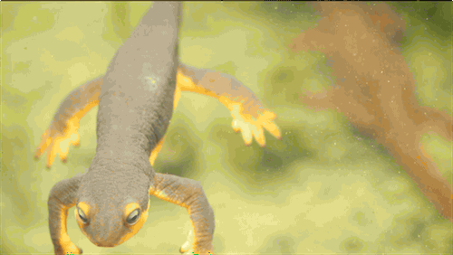
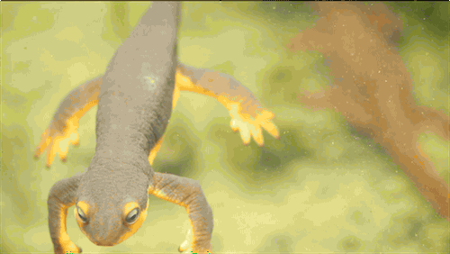

The salamander, (order Caudata), any member of a group of about 740 species of amphibians that have tails and that constitute the order Caudata. The order comprises 10 families, among which are newts and salamanders proper (family Salamandridae) as well as hellbenders, mud puppies, and lungless salamanders. They most commonly occur in freshwater and damp woodlands, principally in temperate regions of the Northern Hemisphere.
Salamanders are generally short-bodied, four-legged, moist-skinned animals, about 10 to 15 cm (4 to 6 inches) long. Many are camouflaged, whereas others are boldly patterned or brightly coloured. The largest members of the order are the Chinese giant salamanders—Andrias sligoi can grow to 2 meters (6.6 feet), and A. davidianus can grow to 1.8 meters (5.9 feet) in length—and the Japanese giant salamander (A. japonicus), which can grow up to 1.7 meters (5.6 feet) in length.
Salamanders feed on insects, worms, snails, and other small animals, including members of their own species. Like other amphibians, they absorb water through their skin, and they require a moist habitat. In regions where the temperature goes below freezing, they often hibernate.
Most adult salamanders hide by day and feed by night. Some remain hidden underground until the breeding season, or they may emerge only when levels of moisture and temperature are appropriate. Many species, especially in the family Plethodontidae, are strictly terrestrial and avoid ponds and streams.